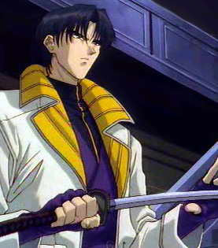

Forums galactiques > Assemblée Galactique : diplomatie officielle > [RP] Le retour de l'Okashira.
Pages : 1
| Aoshi Respect diplomatique : 12  16/07 ETU 10:00 | Score : 12 Détails Un grand homme arriva dans la salle . Il était vêtu de blanc et portait deux sabres kodaichi dans son dos. Il avait la mine sombre mais paraissait quand même interessant. L'homme pris la parole dans la salle.
Bien le bonjour, commandants et commandantes. Je me présente : Aoshi Shimonori , Chef Okashira des unités ninjas Owanibanshû. Si je suis arrivé ici c'est pour devenir plus fort que lors de mon dernier combat contre le patriote le plus fort de tout les temps , Battôsai Himura , l'Assassin. J'avais alors rejoint les rangs de Makoto Shishio , le descendant professionel de Himura . Non pas pour me battre pour lui , mais pour obtenir une plus grande force et des renseignements sur Himura. J'ai dû attendre longtemps avant qu'il ne se montre enfin . J'avais toujours la rage de le vaincre en pensant que c'était de sa faute si mes quatres derniers hommes étaient morts. J'y repense encore a la mitrailleuse Gatling , frappant d'abord Shikijô , voulant me protéger , puis Hyottoko et Beshimi voulant créer une surprise a Kanryû mon employeur. Puis , ce fut au tour de Hannya , mon meilleur guerrier et ami permettant ainsi a Himura de récupérer son sabre et de battre Kanryû. Ce sacrifice était nécessaire pour me sauver mais je m'en veux de les avoir tous faits tuer . Maintenant apres avoir pris du recul et m'avoir fait remis les idées en place par Kenshin , je suis un homme nouveau voulant me battre popur Espèrance. J'espère avoir votre soutien a tous. Merci. |
Pages : 1
Forums galactiques > Assemblée Galactique : diplomatie officielle > [RP] Le retour de l'Okashira.